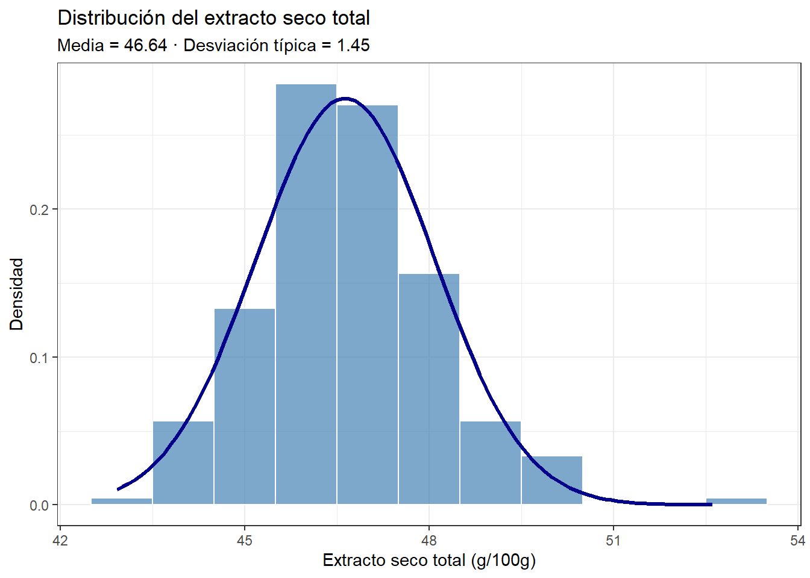
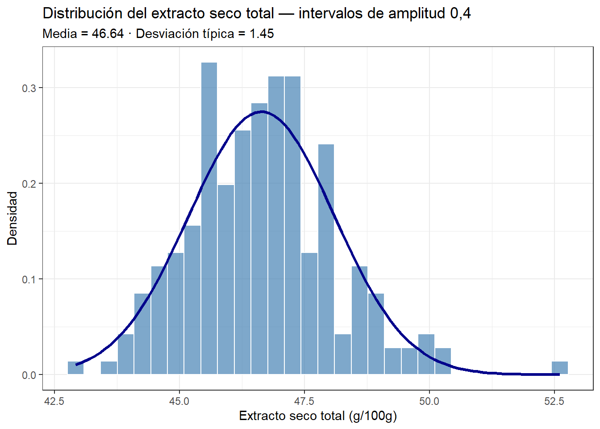
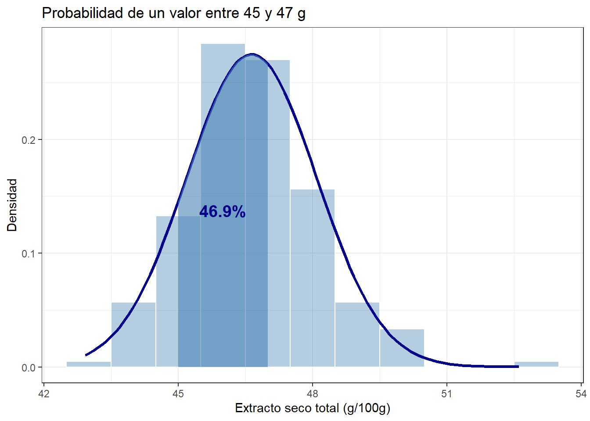
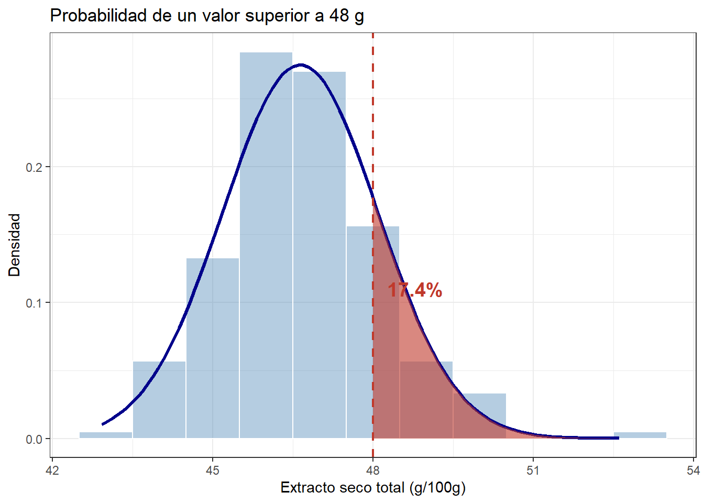

Mostrar código R
library(tidyverse)
library(readr)
df <- read_csv2("camembert.csv")Cómo la distribución normal describe la variabilidad de los datos
Juan Riera
5 de abril de 2026
Cuando medimos una variable en un conjunto de muestras — por ejemplo, el extracto seco total de una serie de quesos — obtenemos una colección de valores numéricos. El primer paso para entender esos datos es organizarlos: ¿cuántas veces aparece cada valor, o cada rango de valores? Eso es exactamente lo que hace una tabla de frecuencias.
Vamos a construirla paso a paso usando datos reales de elaboración de queso camembert, y veremos cómo esta tabla nos lleva de forma natural al concepto de probabilidad.
Agrupamos los valores de extracto seco total (est) en intervalos de amplitud 1 y contamos cuántas veces aparece cada intervalo. Ese recuento es la frecuencia absoluta.
# A tibble: 11 × 2
intervalo frec_abs
<fct> <int>
1 [42.5,43.5] 1
2 (43.5,44.5] 12
3 (44.5,45.5] 28
4 (45.5,46.5] 60
5 (46.5,47.5] 57
6 (47.5,48.5] 33
7 (48.5,49.5] 12
8 (49.5,50.5] 7
9 (50.5,51.5] 0
10 (51.5,52.5] 0
11 (52.5,53.5] 1La tabla nos dice, por ejemplo, cuántas muestras tienen un extracto seco entre 45 y 46 g, entre 46 y 47 g, etc. Pero el número absoluto depende del tamaño de la muestra — si tuviéramos el doble de muestras, todas las frecuencias se duplicarían. Para comparar distribuciones de distinto tamaño necesitamos algo más útil.
La frecuencia relativa es la proporción de veces que aparece cada intervalo respecto al total. Se calcula dividiendo cada frecuencia absoluta entre el número total de observaciones. La suma de todas las frecuencias relativas es siempre 1.
# A tibble: 11 × 3
intervalo frec_abs frec_rel
<fct> <int> <dbl>
1 [42.5,43.5] 1 0.00474
2 (43.5,44.5] 12 0.0569
3 (44.5,45.5] 28 0.133
4 (45.5,46.5] 60 0.284
5 (46.5,47.5] 57 0.270
6 (47.5,48.5] 33 0.156
7 (48.5,49.5] 12 0.0569
8 (49.5,50.5] 7 0.0332
9 (50.5,51.5] 0 0
10 (51.5,52.5] 0 0
11 (52.5,53.5] 1 0.00474La frecuencia relativa ya nos da una idea de proporción: el intervalo con frecuencia relativa 0.28 significa que el 28% de las muestras tienen ese valor de extracto seco.
El histograma es la representación gráfica de la tabla de frecuencias. Cada barra corresponde a un intervalo y su altura representa la frecuencia absoluta.
La forma del histograma ya nos sugiere algo: los valores se concentran en el centro y se van haciendo menos frecuentes hacia los extremos. Esta forma de campana es muy característica y aparece en muchos fenómenos naturales y de producción.
Si sustituimos las frecuencias absolutas por las relativas, el histograma mantiene exactamente la misma forma, pero el eje Y cambia de escala. Ahora cada barra nos indica la proporción de observaciones en ese intervalo.
La forma de campana del histograma se puede aproximar matemáticamente mediante la distribución normal, definida por dos parámetros: la media — que determina dónde se centra la curva — y la desviación típica — que determina cuánto se dispersan los valores alrededor de la media.
Calculamos estos parámetros a partir de nuestros datos y superponemos la curva normal al histograma:
media <- mean(df$est, na.rm = TRUE)
dt <- sd(df$est, na.rm = TRUE)
df |>
ggplot(aes(x = est)) +
geom_histogram(aes(y = after_stat(density)),
binwidth = 1, fill = "steelblue", colour = "white", alpha = 0.7) +
stat_function(fun = dnorm, args = list(mean = media, sd = dt),
colour = "darkblue", linewidth = 1.2) +
labs(
title = "Distribución del extracto seco total",
subtitle = paste0("Media = ", round(media, 2),
" · Desviación típica = ", round(dt, 2)),
x = "Extracto seco total (g/100g)",
y = "Densidad"
) +
theme_bw()
La curva normal es una idealización matemática que describe bien la forma general de la distribución. Cuantos más datos tengamos, mejor se ajustará el histograma a la curva.
Antes de usar la curva normal, podemos calcular estas mismas proporciones directamente a partir de la tabla de frecuencias relativas que ya tenemos. Para el intervalo entre 45 y 47 g, sumamos las frecuencias relativas de los intervalos correspondientes:
| proporcion | porcentaje |
|---|---|
| 0.5545024 | 55.5 |
y para los valores superiores a 48,
| proporcion | porcentaje |
|---|---|
| 0.2511848 | 25.1 |
Este cálculo es exacto para nuestra muestra, pero depende de los datos que tenemos.
La precisión de este cálculo depende de la amplitud de los intervalos que hemos elegido. Con intervalos de amplitud 1, cada barra del histograma agrupa todos los valores en un rango de un gramo, lo que introduce un error de redondeo en los límites. Si reducimos la amplitud — aumentando el número de barras — el histograma se aproxima más a la curva continua y los porcentajes calculados desde la tabla se acercan más a los que obtenemos con la curva normal. En el límite, cuando la amplitud tiende a cero, el histograma y la curva normal coinciden exactamente, y los valores de la frecuencia relativa y la probabilidad también.
df |>
ggplot(aes(x = est)) +
geom_histogram(aes(y = after_stat(density)),
bins = 30, fill = "steelblue", colour = "white", alpha = 0.7) +
stat_function(fun = dnorm, args = list(mean = media, sd = dt),
colour = "darkblue", linewidth = 1.2) +
labs(
title = "Distribución del extracto seco total — intervalos de amplitud 0,4",
subtitle = paste0("Media = ", round(media, 2),
" · Desviación típica = ", round(dt, 2)),
x = "Extracto seco total (g/100g)",
y = "Densidad"
) +
theme_bw()
Si calculamos ahora el porcentaje de valores superiores a 48, el cálculo que obtenemos es:
# Proporción superior a 48 con 30 bins
tabla_frec_04 <- df |>
select(est) |>
mutate(intervalo = cut_width(est, width = 0.4)) |>
group_by(intervalo) |>
summarize(frec_abs = n()) |>
complete(intervalo, fill = list(frec_abs = 0)) |>
mutate(frec_rel = frec_abs / sum(frec_abs))
tabla_frec_04 |>
filter(intervalo %in% c("(47.8,48.2]", "(48.2,48.6]", "(48.6,49]",
"(49,49.4]", "(49.4,49.8]", "(49.8,50.2]",
"(50.2,50.6]", "(50.6,51]", "(51,51.4]",
"(51.4,51.8]", "(51.8,52.2]", "(52.2,52.6]",
"(52.6,53]")) |>
summarize(proporcion = sum(frec_rel),
porcentaje = round(proporcion * 100, 1)) |>
knitr::kable()| proporcion | porcentaje |
|---|---|
| 0.1943128 | 19.4 |
que está muy cerca del valor proporcionado por el área bajo la curva normal, como veremos a continuación.
La curva normal nos permite generalizar: una vez ajustada a nuestros datos — es decir, usando la media y la desviación típica de la muestra — podemos calcular la probabilidad de cualquier intervalo, incluso para valores que no aparecen en la muestra. Esta generalización es válida siempre que la distribución de los datos se aproxime a la forma de campana de la curva normal, también llamada campana de Gauss. El área bajo la curva entre dos valores es exactamente esa probabilidad. Como el área total bajo la curva es siempre 1, todas las probabilidades están entre 0 y 1. Veamos primero un intervalo concreto: ¿qué proporción de muestras tiene un extracto seco entre 45 y 47 g?
lim_inf <- 45
lim_sup <- 47
prob_intervalo <- pnorm(lim_sup, media, dt) - pnorm(lim_inf, media, dt)
df |>
ggplot(aes(x = est)) +
geom_histogram(aes(y = after_stat(density)),
binwidth = 1, fill = "steelblue", colour = "white", alpha = 0.4) +
stat_function(fun = dnorm, args = list(mean = media, sd = dt),
colour = "darkblue", linewidth = 1.2) +
stat_function(fun = dnorm, args = list(mean = media, sd = dt),
xlim = c(lim_inf, lim_sup),
geom = "area", fill = "steelblue", alpha = 0.6) +
annotate("text",
x = (lim_inf + lim_sup) / 2,
y = dnorm(media, media, dt) * 0.5,
label = paste0(round(prob_intervalo * 100, 1), "%"),
colour = "darkblue", size = 5, fontface = "bold") +
labs(
title = "Probabilidad de un valor entre 45 y 47 g",
x = "Extracto seco total (g/100g)",
y = "Densidad"
) +
theme_bw()
El segundo caso es especialmente importante: ¿qué probabilidad hay de que una muestra tenga un extracto seco superior a un valor umbral? Esta pregunta equivale a calcular el área bajo la curva a partir de ese umbral — la cola derecha de la distribución.
Este concepto es exactamente el mismo que usamos para analizar los eventos extremos en el post sobre el clima: la probabilidad de un evento extremo de calor es el área bajo la cola derecha de la distribución a partir de un umbral determinado.
umbral <- 48
prob_cola <- 1 - pnorm(umbral, media, dt)
df |>
ggplot(aes(x = est)) +
geom_histogram(aes(y = after_stat(density)),
binwidth = 1, fill = "steelblue", colour = "white", alpha = 0.4) +
stat_function(fun = dnorm, args = list(mean = media, sd = dt),
colour = "darkblue", linewidth = 1.2) +
stat_function(fun = dnorm, args = list(mean = media, sd = dt),
xlim = c(umbral, media + 4 * dt),
geom = "area", fill = "#c0392b", alpha = 0.6) +
geom_vline(xintercept = umbral, colour = "#c0392b",
linetype = "dashed", linewidth = 0.8) +
annotate("text",
x = umbral + 0.8,
y = dnorm(media, media, dt) * 0.4,
label = paste0(round(prob_cola * 100, 1), "%"),
colour = "#c0392b", size = 5, fontface = "bold") +
labs(
title = paste0("Probabilidad de un valor superior a ", umbral, " g"),
x = "Extracto seco total (g/100g)",
y = "Densidad"
) +
theme_bw()
El recorrido que hemos hecho en este post resume la lógica fundamental de la estadística descriptiva e inferencial:
En el siguiente post veremos cómo los cambios en la media y la varianza de esta distribución tienen consecuencias muy concretas sobre la frecuencia de los eventos extremos.
Wickham H, Çetinkaya-Rundel M, Grolemund G. R for Data Science. 2nd ed. O’Reilly; 2023. https://r4ds.hadley.nz